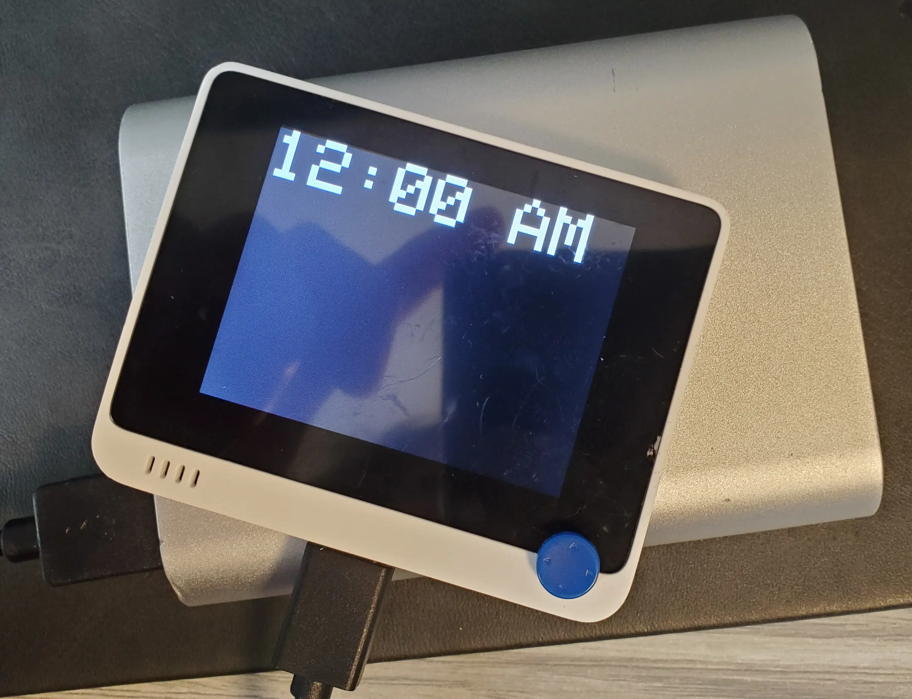

WIO Terminal Sleep tracker
Description
A sleep tracker, inspired by apps like
Sleep Tracker
Parts list
Video
Steps
- Upload the code to the WIO Terminal
- Plug in the battery pack
- Set the clock and the alarm, press C to continue
- Sleep
- Press B to stop sleep, if the alarm is not going off

Code